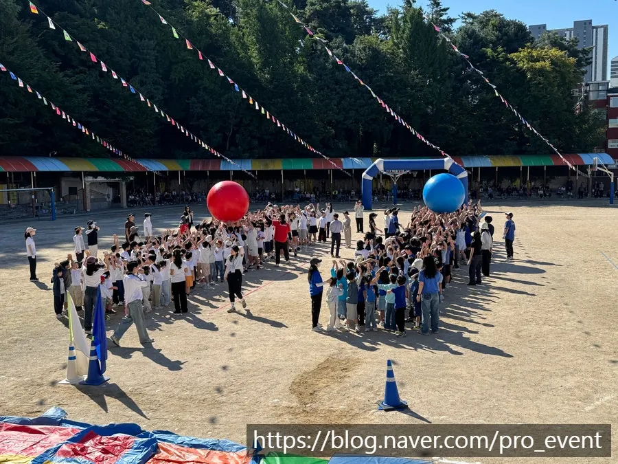

수원 학교 운동회 대행에서 먼저 정할 것은 종목이 아니라 학년을 어떻게 묶어 기다리는 시간을 줄일지입니다. 한 학년씩 차례로 경기하면 뛰는 학생보다 기다리는 학생이 많아집니다. 프로이벤트가 맡은 수원 창용초등학교 운동회 (2026.09)는 오전 9시부터 12시까지 약 3시간 동안, 1 · 2학년, 3 · 4학년, 5 · 6학년을 한 그룹씩 묶어 진행했습니다. 그 현장 기준으로 운동회 준비 순서를 정리했습니다.

- 학생 수가 많지 않은 학교는 두 학년씩 묶어 한 번에 더 많은 학생이 뛰게 하면 게임 수를 늘릴 수 있습니다.
- 종목은 학년 그룹의 체격과 이해 수준에 맞춰 따로 고릅니다.
- 오전 3시간 운동회는 몸풀기 · 그룹별 종목 · 전체 종목 · 마무리 순으로 짭니다.
- 학부모 경기를 넣을지는 학교 사정에 따라 정합니다. 창용초는 학부모 경기 없이 학생 중심으로 짰습니다.
1. 수원 학교 운동회 대행, 학년 묶음부터
운동회의 가장 큰 적은 기다림입니다. 한 학년이 경기하는 동안 다른 학년이 앉아서 기다리면, 정작 운동장에서 뛰는 시간은 짧아집니다. 창용초 운동회에서는 학생 수가 많지 않은 학교 사정을 보고 두 학년씩 한 그룹으로 묶었습니다. 덕분에 한 번에 더 많은 학생이 뛰었고, 학생들이 참여하는 게임 수도 늘릴 수 있었습니다.
| 방식 | 좋은 점 | 맞는 학교 |
|---|---|---|
| 학년별 차례 진행 | 학년에 꼭 맞는 종목 | 학년별 학생 수가 많은 학교 |
| 두 학년씩 묶음(3그룹) | 기다림이 줄고 게임 수가 늘어남 | 학생 수가 많지 않은 학교 |
| 저학년 · 고학년 2그룹 | 운영이 단순함 | 운동장이 좁은 학교 |
| 전교 청백 대항 | 응원 열기가 큼 | 전체 종목 위주 운동회 |
2. 학년 그룹별 종목 고르기
같은 종목이라도 1학년과 6학년이 받아들이는 방식이 다릅니다. 저학년은 규칙이 한 문장으로 끝나는 종목, 고학년은 팀이 작전을 세울 수 있는 종목이 잘 맞습니다. 에어 구조물이나 대형 공 같은 도구를 쓰면 저학년도 바로 규칙을 이해합니다.
| 그룹 | 잘 맞는 종목 | 준비물 |
|---|---|---|
| 1 · 2학년 | 공 넣기 · 대형 공 굴리기 · 낙하산 천 놀이 | 에어 구조물, 대형 공, 낙하산 천 |
| 3 · 4학년 | 단체 줄넘기 · 릴레이 게임 · 협동 경주 | 긴 줄, 바통, 협동 도구 |
| 5 · 6학년 | 팀 미션 · 줄다리기 · 이어달리기 | 줄다리기 줄, 팀 조끼 |
| 전체 | 청백 응원전 · 마무리 계주 | 응원 도구, 음향 |

3. 오전 9시부터 12시까지, 3시간 시간표
창용초 운동회처럼 오전 9시부터 12시까지 약 3시간 진행하는 운동회의 시간표 예시입니다. 그룹별 종목은 운동장을 나눠 동시에 돌리고, 전체 종목은 모두가 보는 자리에서 합니다.
| 시간 | 순서 | 운영 |
|---|---|---|
| 09:00 | 모이기 · 개회 · 다 같이 몸풀기 | 음향, 레크리에이션 강사 |
| 09:20 | 1 · 2학년 그룹 종목 | 에어 구조물 구역 |
| 10:00 | 3 · 4학년 그룹 종목 | 릴레이 구역 |
| 10:40 | 쉬는 시간 · 물 마시기 | 그늘 천막 |
| 10:55 | 5 · 6학년 그룹 종목 | 줄다리기 구역 |
| 11:30 | 전체 응원전 · 마무리 계주 | 운동장 전체 |
| 11:50 | 결과 발표 · 폐회 | 음향, 정리 안내 |
4. 그늘 · 물 · 안전 준비
봄 · 가을 운동회라도 한낮 햇볕은 강합니다. 학년 그룹마다 그늘 천막을 두고, 쉬는 시간을 시간표에 넣어 물을 마시게 합니다. 에어 구조물과 경기 도구 주변에는 지켜보는 어른을 배치합니다.
- 그룹별 대기 자리에 천막을 두고, 대기 줄이 경기 구역과 겹치지 않게 선을 긋습니다.
- 에어 구조물 앞에는 매트를 깔고 한 번에 들어가는 인원을 정합니다.
- 보건 선생님 자리와 구급 용품 위치를 본부석 옆으로 정합니다.
- 비가 오면 강당 · 체육관으로 옮길 실내용 종목 목록을 따로 둡니다.

5. 수원 운동회 준비 일정
서울 본사에서 수원시청까지는 차로 약 30분 · 30.6km 입니다. 오전 9시에 시작하는 운동회라면 에어 구조물 설치와 음향 점검을 그 전에 끝내야 하므로, 설치 시작 시각을 학교와 미리 맞춥니다. 운동장 출입 차량 동선도 함께 확인합니다.
- 6주 전: 날짜 · 학년별 학생 수 · 운동장 크기 · 예산 범위 전달, 견적 받기.
- 4주 전: 학년 묶음 방식 · 종목 · 시간표 확정.
- 2주 전: 가정 안내문(복장 · 물 · 비 올 때 안내) 발송.
- 1주 전: 청백 · 팀 명단, 안전 담당 선생님 배치.
- 당일: 설치 → 점검 → 운동회 → 철수 · 사진 정리.
6. 학교 운동회 견적 항목표
자동 견적서에서 항목을 골라 보내 주시면 담당자가 확인 후 1영업일 안에 1차 제안과 견적으로 답합니다.
| 항목 | 확인할 것 |
|---|---|
| 학교행사(운동회 기획 · 진행) | 학년 묶음 · 종목 · 시간표 |
| 레크리에이션 강사 | 진행 · 응원전 |
| 체육대회 게임도구 | 그룹별 종목 수 |
| 에어바운스 | 저학년 에어 구조물 |
| 음향 (중형) | 운동장 크기 |
| 천막 | 그룹별 그늘 · 본부석 |
| 행사 스태프 | 구역별 진행 · 안전 |
운동회 기록은 행사 이야기 — 수원 창용초등학교 운동회, 지역 안내는 수원 행사 안내에 있습니다.
자주 묻는 질문
학생 수가 적은 학교도 운동회 대행이 되나요?
됩니다. 학생 수가 많지 않으면 두 학년씩 묶어 진행해 기다리는 시간을 줄이고 게임 수를 늘리는 방식이 잘 맞습니다.
학부모 경기를 꼭 넣어야 하나요?
학교 사정에 따라 정합니다. 학생 중심으로 짜면 학생들의 경기 시간이 늘어납니다.
오전만 해도 충분한가요?
오전 9시부터 12시까지 약 3시간으로도 학년 그룹 종목과 전체 종목을 모두 넣을 수 있습니다.